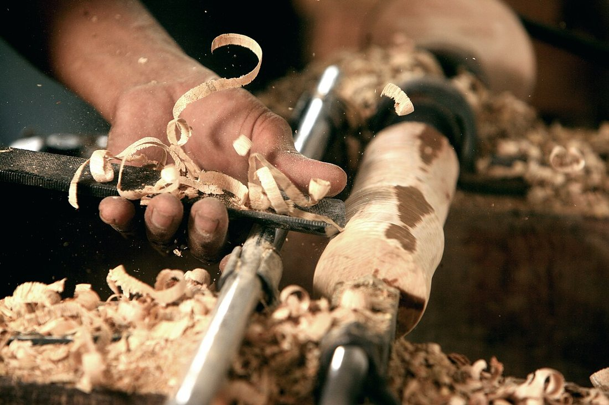
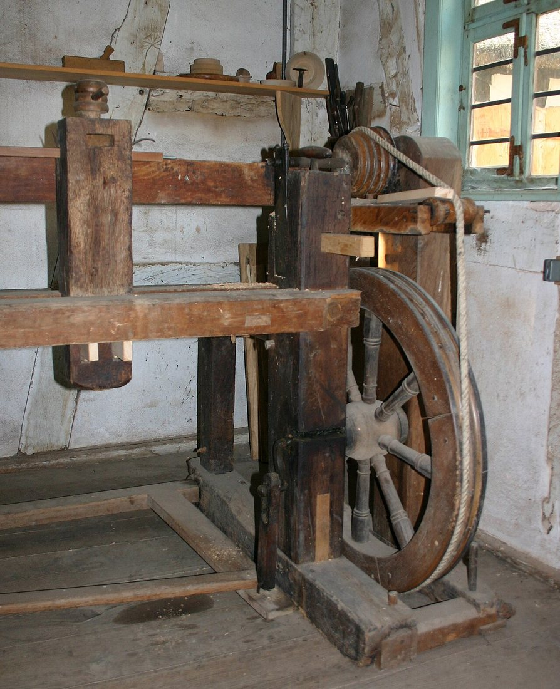
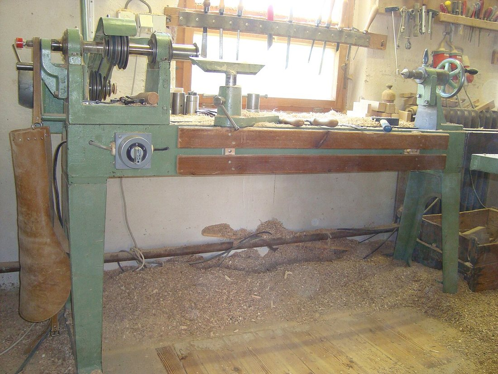
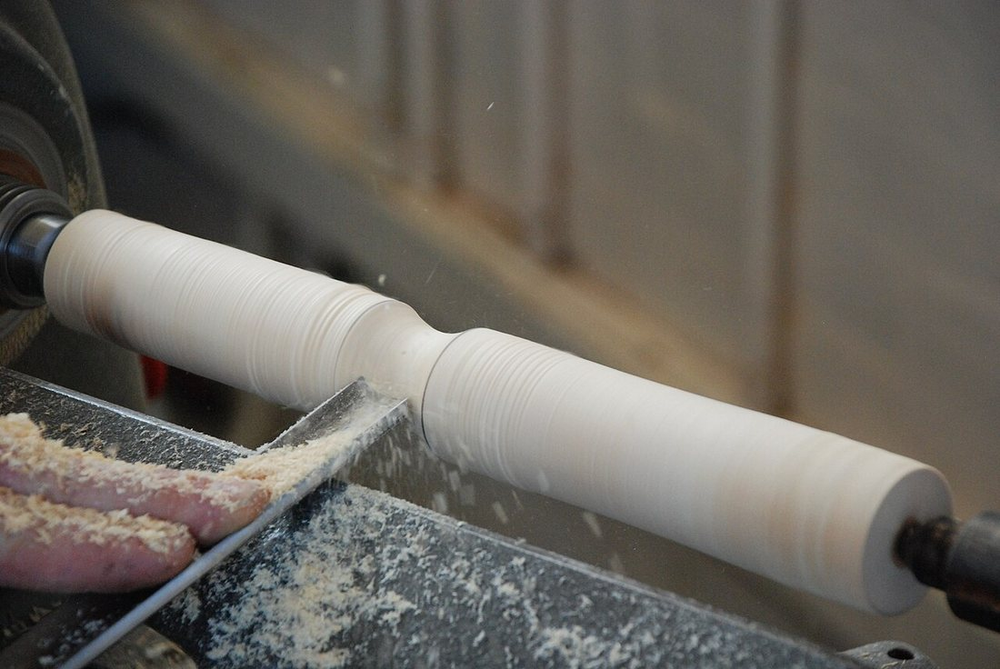
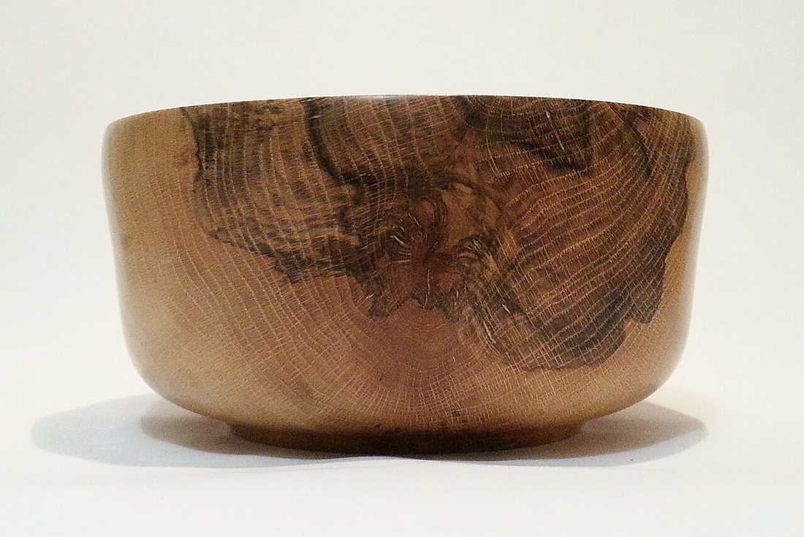

Көркем еңбек (ұлдар) · 2-бөлім · Ағаш өңдеу Art & Craft (Boys) · Section 2 · Woodworking Художественный труд (мальчики) · Раздел 2 · Обработка древесины
🪵 Ағашты токарлық өңдеу
🪵 Wood Turning on a Lathe
🪵 Токарная обработка древесины
Айналатын дайындама + өткір қашау = дөңгелек әрі тегіс ағаш бұйым. A spinning blank + a sharp chisel = a round, smooth wooden object. Вращающаяся заготовка + острая стамеска = круглое и гладкое деревянное изделие.
Токарлық өңдеу дегеніміз не? What Is Wood Turning? Что такое токарная обработка?
Токарлық өңдеу — ағаш дайындаманы білдек (станок) айналдырып тұрғанда, оны қозғалмайтын өткір қашаумен кесіп өңдеу тәсілі. Дайындама секундына ондаған рет айналады, ал шебер қашауды тірекке (подручник) сүйеп, дайындаманы аз-аздан жонып, оған дөңгелек пішін береді. Wood turning is a way of shaping a wooden blank while a machine — the lathe — spins it, and a sharp, hand-held chisel cuts away the wood. The blank turns dozens of times per second, while the craftsman rests the chisel on the tool rest and peels the wood off little by little, giving it a round shape. Токарная обработка — это способ придать деревянной заготовке форму, пока станок (токарный станок) вращает её, а острая ручная стамеска снимает древесину. Заготовка вращается десятки раз в секунду, а мастер опирает стамеску на подручник и снимает стружку понемногу, придавая изделию круглую форму.
Бұл әдістің басты ерекшелігі — айналу осіне симметриялы (дөңгелек қимасы бар) бұйымдарды жасауға мүмкіндік береді: цилиндр, конус, шар, тостаған, шам қойғыш. Бір ағаш кесегінен тегіс, әсем әрі дәл деталь шығады. Its key feature is that it produces objects that are symmetrical around the axis of rotation (with a round cross-section): cylinders, cones, spheres, bowls and candlesticks. A single piece of wood becomes a smooth, elegant, precise part. Главная особенность этого способа — он создаёт изделия, симметричные относительно оси вращения (с круглым сечением): цилиндры, конусы, шары, чаши, подсвечники. Из одного куска дерева получается гладкая, изящная и точная деталь.

Білдектің тарихы A Short History of the Lathe Немного истории станка
Токарлық білдек — адамзаттың ең көне станоктарының бірі. Ежелгі Мысыр мен Грекияда дайындаманы иілген таяқ пен арқанмен айналдырған: бір адам арқанды тартса, екіншісі қашауды ұстаған. Кейін аяқпен басатын (педальды) білдек пайда болды — енді шебердің екі қолы да бос болды. The lathe is one of humankind's oldest machines. In ancient Egypt and Greece the blank was spun with a bent stick and a cord: one person pulled the cord while another held the chisel. Later came the foot-powered (treadle) lathe — now both of the craftsman's hands were free. Токарный станок — одна из древнейших машин человечества. В Древнем Египте и Греции заготовку вращали согнутой палкой и верёвкой: один человек тянул верёвку, другой держал резец. Позже появился ножной (педальный) станок — теперь обе руки мастера были свободны.
Бүгінгі білдекті электр қозғалтқыш айналдырады, ал жылдамдықты реттеуге болады. Бірақ жұмыс принципі мыңжылдықтар бойы өзгерген жоқ: дайындама айналады — қашау кеседі. Today's lathe is driven by an electric motor and its speed can be adjusted. But the working principle has not changed for thousands of years: the blank spins — the chisel cuts. Сегодняшний станок вращает электромотор, а скорость можно регулировать. Но принцип работы не меняется тысячи лет: заготовка вращается — резец снимает стружку.

Токарлық білдектің құрылысы Anatomy of the Wood Lathe Устройство токарного станка
Әр бөлшектің өз қызметі бар. 🔍 Үлкейту үшін суретті басыңыз. Each part has its own job. 🔍 Tap the photo to enlarge it. У каждой части — своя роль. 🔍 Нажмите на фото, чтобы увеличить.

СтанинаBedСтанина
Барлық тораптарды ұстап тұратын берік темір (немесе ағаш) негіз.The strong metal (or wooden) frame that carries all the other parts.Прочная металлическая (или деревянная) основа, несущая все узлы.
Алдыңғы бабкаHeadstockПередняя бабка
Мотор мен шпиндель орналасқан. Дайындаманың бір ұшын ұстап, оны айналдырады.Holds the motor and spindle. It grips one end of the blank and makes it spin.Содержит мотор и шпиндель. Зажимает один конец заготовки и вращает её.
Артқы бабкаTailstockЗадняя бабка
Дайындаманың екінші ұшын орталыққа (центр) сүйеп, мықтап ұстап тұрады.Supports the other end of the blank on a centre and holds it firmly.Поджимает второй конец заготовки центром и удерживает её ровно.
ПодручникTool restПодручник
Қашауды сүйейтін тірек. Дайындамаға мүмкіндігінше жақын қойылады.The rest the chisel leans on. It is set as close to the blank as possible.Опора, на которую кладут стамеску. Ставится как можно ближе к заготовке.
Жону реті: қадам-қадам The Turning Process, Step by Step Порядок точения: шаг за шагом
Цилиндр пішінді бұйымды (мысалы, тұтқа) жонудың негізгі реті. The basic order for turning a cylindrical part (for example, a handle). Основной порядок точения цилиндрической детали (например, ручки).
Дайындаманы таңда.Choose the blank.Подбери заготовку. Жарықшағы, бұтақ көзі жоқ құрғақ ағаш ал. Қырларын алдын ала сегіз қырлы етіп жон.Take dry wood with no cracks or knots. Roughly plane its edges into an octagon first.Возьми сухую древесину без трещин и сучков. Сначала сострогай рёбра «на восьмигранник».
Білдекке бекіт.Mount it.Закрепи в станке. Дайындаманы алдыңғы және артқы бабка центрлерінің арасына қыс, мықтап бекіт.Clamp the blank between the headstock and tailstock centres and lock it tight.Зажми заготовку между центрами передней и задней бабок и надёжно закрепи.
Тіректі қой.Set the tool rest.Установи подручник. Подручникті дайындамаға 2–3 мм қашықтықта, ось деңгейіне жақын орнат. Қолмен айналдырып, тиіп-тимейтінін тексер.Set the tool rest 2–3 mm from the blank, near axis height. Spin it by hand to check nothing touches.Поставь подручник в 2–3 мм от заготовки, около оси. Проверни рукой, чтобы ничего не задевало.
Дөрекі жону.Rough it round.Черновое обтачивание. Білдекті қос, жартылай дөңгелек қашаумен (рейер) дайындаманы цилиндрге айналдыр.Switch on, and with a roughing gouge turn the blank down to a clean cylinder.Включи станок и полукруглой стамеской (рейером) обточи заготовку в ровный цилиндр.
Пішінін бер.Shape it.Придай форму. Жалпақ қашаумен (мейсель) ойықтар, белдеулер мен өтпелерді жасап, керекті пішінге келтір.With a flat chisel (skew) cut grooves, beads and transitions to the shape you want.Плоской стамеской (мейселем) выточи канавки, валики и переходы до нужной формы.
Тазала.Sand it.Зачисти. Білдек айналып тұрғанда зімпара қағазбен (наждак) бетін тегістеп, жылтыр етіп тазала.While it still spins, smooth the surface with sandpaper until it is even.Пока станок вращается, зачисти поверхность наждачной бумагой до гладкости.
Кесіп ал.Part it off.Отрежь. Білдекті өшір, дайындаманы шеш, ұштарын араламен кесіп, тегістеп аяқта.Switch off, remove the blank, saw off the ends and finish them.Выключи станок, сними заготовку, отпили концы и зачисти.

центрлер арасында жонылған дайындамаa blank turned between centresзаготовка, обточенная между центрами
💡 КеңесTipСовет
Қашауды әрқашан тірекке сүйеп, дайындамаға жоғарыдан жуан ұшымен біртіндеп тигіз. Асықпа — жұқа жоңқа таза бет береді.Always lean the chisel on the rest and bring it to the wood gently, from above. Don't rush — a thin shaving gives a clean surface.Всегда опирай стамеску на подручник и подводи к дереву плавно, сверху. Не спеши — тонкая стружка даёт чистую поверхность.
Жонудың екі тәсілі Two Ways of Turning Два способа точения
Дайындаманы қалай бекіткеніңе байланысты не жасай алатының өзгереді. How you mount the blank decides what you can make. От способа крепления заготовки зависит, что можно выточить.
| Признак | Между центрами | На планшайбе / в патроне |
|---|---|---|
| Как закреплено | С двух концов — передним и задним центрами | Только за один конец (торец) |
| Что точат | Длинные детали: ножки, ручки, балясины, скалки | Объёмные изделия: чаши, тарелки, шкатулки |
| Направление работы | Вдоль оси, по длине заготовки | Снаружи и изнутри, в торец |
| Главные стамески | Рейер (черновая) и мейсель (чистовая) | Чашечный рейер и отрезной резец |
| Белгі | Центрлер арасында | Планшайбада / патронда |
|---|---|---|
| Қалай бекітіледі | Екі ұшынан — алдыңғы және артқы центрмен | Тек бір ұшынан (бүйірінен) |
| Не жонылады | Ұзын детальдар: аяқ, тұтқа, балясина, оқтау | Көлемді бұйымдар: тостаған, табақ, қобдиша |
| Жұмыс бағыты | Ось бойымен, дайындаманың ұзындығына | Сырт жағынан және ішінен, бүйіріне |
| Негізгі қашаулар | Рейер (дөрекі) және мейсель (таза) | Тостаған рейері мен кескіш резец |
| Feature | Between centres | On a faceplate / in a chuck |
|---|---|---|
| How it is held | At both ends — by the head and tail centres | By one end only (the face) |
| What you make | Long parts: legs, handles, balusters, rolling pins | Hollow forms: bowls, plates, boxes |
| Direction of work | Along the axis, down the length | Outside and inside, into the face |
| Main chisels | Roughing gouge and skew chisel | Bowl gouge and parting tool |
🪓 Токарь қашаулары 🪓 Turning Chisels 🪓 Токарные стамески
Рейер (жартылай дөңгелек)Roughing gougeРейер (полукруглая)
Дөрекі жонуға арналған науашық тәрізді қашау. Дайындаманы тез цилиндрге айналдырады.A trough-shaped chisel for rough work. It quickly brings the blank to a cylinder.Желобчатая стамеска для черновой работы. Быстро обтачивает заготовку в цилиндр.
Мейсель (жалпақ, қиғаш)Skew chiselМейсель (плоская, косая)
Қиғаш жүзді жалпақ қашау. Таза, тегіс бет, белдеу мен ойық жасайды.A flat chisel with a slanted edge. It gives a clean, smooth surface, beads and grooves.Плоская стамеска с косым лезвием. Даёт чистую гладкую поверхность, валики и канавки.
Кескіш резецParting toolОтрезной резец
Жіңішке тік қашау. Тереңдік ойығын белгілеуге және дайындаманы кесіп алуға керек.A narrow, straight tool. Used to cut depth grooves and to part the piece off.Узкий прямой резец. Нужен для канавок глубины и чтобы отрезать готовую деталь.
⚠️ Қауіпсіздік ережелері ⚠️ Safety Rules ⚠️ Правила безопасности
- 👓 Көзілдірік (қорғаныш) міндетті — жоңқа көзге ұшады.Safety goggles are a must — shavings fly into the eyes.Защитные очки обязательны — стружка летит в глаза.
- 👕 Жеңді түр, шарф пен галстукты шеш, ұзын шашты жинап байла.Roll up sleeves, remove scarf and tie, tie back long hair.Закатай рукава, сними шарф и галстук, убери длинные волосы.
- 🔒 Білдекті қоспас бұрын дайындаманың мықтап бекігенін тексер.Before switching on, check the blank is firmly clamped.Перед включением проверь, что заготовка надёжно закреплена.
- ✋ Айналып тұрған дайындамаға қолмен тиюге болмайды.Never touch the spinning blank with your hand.Нельзя трогать вращающуюся заготовку рукой.
- 🛠️ Подручникті тек білдек толық тоқтағанда жылжыт.Move the tool rest only when the lathe has fully stopped.Переставляй подручник только при полностью остановленном станке.
- 🔪 Тек өткір қашаумен жұмыс істе — өтпес құрал «секіреді».Work only with sharp chisels — a blunt tool "jumps".Работай только острыми стамесками — тупой инструмент «прыгает».
Не жонуға болады? What Can You Turn? Что можно выточить?
Тостаған, тұтқа, ойыншық — бәрі бір осьтің төңірегінде. 🔍 Суретті басыңыз. Bowls, handles, toys — all built around one axis. 🔍 Tap a photo. Чаши, ручки, игрушки — всё вокруг одной оси. 🔍 Нажмите на фото.

💬 Қорытынды 💬 In a nutshell 💬 Главное
Токарлық өңдеу — ағаштан дөңгелек, симметриялы әрі тегіс бұйым жасаудың ежелгі әрі дәл тәсілі. Білдек дайындаманы айналдырады, ал шебер тіректі сүйеген өткір қашаумен пішін береді. Дайындаманы дұрыс таңдау, мықтап бекіту, қашауды дұрыс ұстау және қауіпсіздік ережелерін сақтау — сапалы әрі қауіпсіз жұмыстың кепілі. Wood turning is an ancient yet precise way to make round, symmetrical, smooth objects from wood. The lathe spins the blank, and the craftsman shapes it with a sharp chisel resting on the tool rest. Choosing the right blank, clamping it firmly, holding the chisel correctly and following the safety rules are the keys to good and safe work. Токарная обработка — древний и в то же время точный способ получить из дерева круглые, симметричные и гладкие изделия. Станок вращает заготовку, а мастер придаёт ей форму острой стамеской, опёртой на подручник. Правильный выбор заготовки, надёжное крепление, верный хват стамески и соблюдение правил безопасности — залог качественной и безопасной работы.